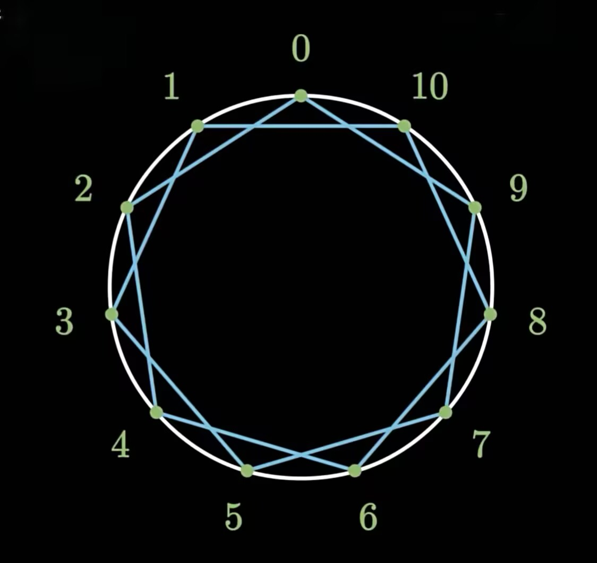

同余
首先我们给出两个数同余的定义：
$$
a \equiv b \pmod{p} \iff a - b = pk
$$
对某两个整数 $a,b$,若它们除以**正整数** $p$ 所得的余数相等,则称 $a,b$ 对模 $p$ 同余，一般记作： $a \equiv b \pmod{p}$
下面我们思考一个问题：
Q. 请问 $2362837 \times 1419853$ 的个位数字应该是多少？
显然，大部分人本能想法就是，根据人类的乘法规则，列出两个数字列项相乘，那么最后结果的个位数只会由这两个乘数的个位数的乘积决定，比如这道题明显就是 $(7\times 3) \mod 10=1$。
仔细品味这个例子，其实蕴含着一个深刻的道理：
$$
x \equiv r \pmod{10},\ y \equiv s \pmod{10} \\ \implies xy \equiv rs \pmod{10}
$$
证明其实也很简单：
$$
\begin{align*}
x &= 10x' + r,\ y = 10y' + s \\
xy &= (10x' + r)(10y' + s) \\
&= 10^2 x'y' + 10x's + 10y'r + rs
\end{align*}
$$
当然了，这里的$10$也没有特殊性，我们可以推广到任意的 $p$ ：
$$
\begin{align*}
x &\equiv r \pmod{p},\ y \equiv s \pmod{p} \\
&\implies xy \equiv rs \pmod{p} \\
\\
x &= px' + r,\ y = py' + s \\
xy &= (px' + r)(py' + s) \\
&= p^2 x'y' + px's + py'r + rs
\end{align*}
$$
除了乘法，加法其实也是类似的，最后的结论我们可以写为：
$$
x \equiv r \pmod{p},\ y \equiv s \pmod{p} \\ \implies xy \equiv rs \pmod{p} \quad \quad \quad \quad \implies x+y \equiv r+s \pmod{p}
$$
$$
x = px' + r,\ y = py' + s \\
\begin{alignat*}{2}
xy &= (px' + r)(py' + s) & x + y &= (px' + r) + (py' + s) \\
&= p^2 x'y' + px's + py'r + rs & &= px' + py' + r + s
\end{alignat*}
$$
所以同余有一个很好的性质：
如果你关心的不是一个数字绝对的大小，而只关心他除以$p$的余数，那么任何时候，你都可以放心地扔掉这个具体的数字，而只保留它的余数进行运算就够了。
费马小定理
首先我们来看一个非常有意思的现象，假设我们有一个圆，上面有11个点，然后你可以从任何一个位置出发,且第一次出发后到达的点不能是原来的位置，每次移动相同的距离$a$，那么你会惊奇的发现，你会完美无瑕的走过每一个顶点之后，再回到原来的位置，期间不会走过重复的位置。

你肯定会好奇这到底是为什么呢？以及这个11是随便取的数吗？
答案当然不是的。这里的11是一个质数。
我们不妨先思考下面这个问题：
Q. 对于一个质数$p$来说，我们假设$a$不是$p$的倍数，也就是$a \ne p k_0$。
那么对于 $a、2a、3a、\dots、(p-2)a、(p-1)a$，是否存在两个数，这两个数对模 $p$ 同余吗？
答案显然是不存在。
我们需要证明的是 $xa \equiv ya \pmod{p}$,其中 $1\le y < x \le p-1$,也即证明 $(x-y)a=pk$,又由乘法分配律可知，左边式子中的 $x-y$ 和 $a$ 需要找到至少一个数，有因数 $p$,但是显然由定义 $a$ 不是，而 $x-y<p$，显然也做不到，因此永远无法找到这样的两个数。
于是上面这个很有意思的现象似乎就可以解释了。
这里圆上点的数量其实就是 $p$,每次我们出发移动的距离其实就是 $a$，比如我们从 $0$ 出发，第一次走到 $a$,第二次走到 $2a$,其实就是我们上面讨论的 $a、2a、3a、\dots、(p-2)a、(p-1)a$ 这些数，而这些数对 $p$ 取余的结果就是他们每次到达的位置，确实不存在一样的，这就是上面神奇现象的数学原理。
解释完上面这个有意思的现象，我们再继续在刚刚的例子中挖掘一些有意思的东西，比如说：
Q. 你知道 $a、2a、3a、\dots、(p-2)a、(p-1)a$ 除以 $p$ 的余数的集合里有哪些数吗？
显然正好是 $1、2、3、\dots、 p-1$。这些数也恰好和 $a、2a、3a、\dots、(p-2)a、(p-1)a$ 中的某个数同余，因此由上面的乘法性质可得：
$$
\begin{align*}
&a^{p-1}(p-1)! \equiv (p-1)! \pmod {p} \\
&\implies (a^{p-1}-1)(p-1)!=pk
\end{align*}
$$
又由乘法分配律可知，左边式子中的 $a^{p-1}-1$ 和 $(p-1)!$ 需要找到至少一个数，有因子 $p$,但是显然 $(p-1)!$ 不存在因子 $p$，因此只能是 $a^{p-1}-1=pk'$，也即：
$$
a^{p-1} \equiv 1 \pmod{p} \quad\quad(a \ne pk_0)
$$
至此你便自己探索出了鼎鼎大名的费马小定理(^_^)
Good Boy!